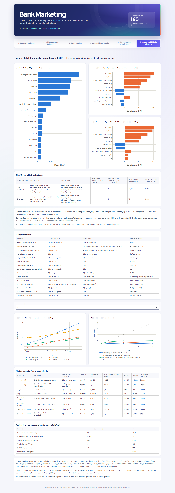

Pestaña 6 · Interpretabilidad y costo computacional#
La sexta pestaña explica el mejor modelo con SHAP (global y local), lo contrasta con LIME en XGBoost y resume la optimización computacional: complejidad teórica frente a tiempos medidos.

Las figuras son interactivas (se puede pasar el cursor sobre ellas) y las interpretaciones usan las mismas cifras que el dashboard y que el cuaderno.
6.1 SHAP y LIME#
| Observación | Top 10 SHAP | Top 10 LIME | Variables comunes en el top 10 | Spearman de |importancia| (comunes) | % de signos coincidentes | R² del modelo local de LIME |
|---|---|---|---|---|---|---|
| Bien clasificada | month_infrequent_sklearn, education_professional.course, job_technician, cons.conf.idx, day_of_week_thu… | month_infrequent_sklearn, education_infrequent_sklearn, default_unknown, cons.conf.idx, day_of_week_mon… | 3 | 1,000 | 66,667 | 0,222 |
| Error elevado | month_infrequent_sklearn, cons.conf.idx, loan_yes, housing_yes, day_of_week_thu… | month_infrequent_sklearn, default_unknown, education_infrequent_sklearn, cons.conf.idx, pdays… | 4 | 1,000 | 75,000 | 0,208 |
| variable | Media |SHAP| | Ganancia XGBoost |
|---|---|---|
| cons.price.idx | 0,2651 | 50,5853 |
| month_infrequent_sklearn | 0,2170 | 121,5408 |
| cons.conf.idx | 0,1696 | 173,2239 |
| age | 0,1445 | 13,0426 |
| previous | 0,1297 | 11,5926 |
| missingindicator_pdays | 0,1129 | 25,5458 |
| contact_telephone | 0,1125 | 15,9307 |
| campaign | 0,0891 | 12,6048 |
| day_of_week_mon | 0,0681 | 15,3024 |
| month_may | 0,0592 | 61,6254 |
Interpretación. En SVM, las variables con mayor contribución SHAP media son missingindicator_pdays, cons.conf.idx, previous y month_may. SHAP y LIME comparten 3 y 4 de sus 10 variables principales en las dos observaciones explicadas.
Esto significa que el modelo se apoya sobre todo en el régimen de la campaña (contexto macroeconómico y calendario) y en el historial de contactos; LIME coincide en lo esencial, pero su modelo lineal local y sus perturbaciones independientes alteran el orden del resto.
Por ello, se recomienda usar SHAP como explicación de referencia y leer las contribuciones como asociaciones, no como efectos causales.
6.2 Costo computacional#
| Modelo | Entrenamiento | Inferencia | Implementación |
|---|---|---|---|
| KNN (búsqueda exhaustiva) | O(1) (solo almacena) | O(n · p) por consulta | brute |
| KNN (KD-Tree / Ball Tree) | O(p · n log n) | O(log n) en baja dimensión; tiende a O(n · p) si p es alto | kd_tree / ball_tree |
| KNN aproximado (FAISS HNSW) | O(n log n · M) | ≈ O(log n) por consulta, con pérdida de exactitud | IndexHNSWFlat |
| Naive Bayes gaussiano | O(n · p) | O(p · c) por consulta | fit / partial_fit |
| Regresión logística (SAGA) | O(n · p) por época | O(p) por consulta | solver saga |
| Ridge (Cholesky) | O(n · p² + p³) | O(p) | cholesky |
| Ridge / Lasso (SAGA o SGD) | O(n · p) por época | O(p) | saga / SGD |
| Lasso (descenso por coordenadas) | O(n · p) por pasada | O(p) | cd |
| Árbol de decisión | O(p · n log n) | O(profundidad) | CART |
| Random Forest | O(B · p' · n log n) | O(B · profundidad) | B árboles, p' variables por división |
| XGBoost (exacto) | O(B · p · n log n) | O(B · profundidad) | tree_method='exact' |
| XGBoost (histogramas) | O(B · p · n) tras discretizar en ≤ 256 bins | O(B · profundidad) | tree_method='hist' |
| SVM con núcleo (SMO) | O(n²) a O(n³) | O(n_sv · p) | SVC(kernel='rbf') |
| SVM lineal (LinearSVC / SGD) | O(n · p) por época | O(p) | liblinear / SGD |
| Nyström + SVM lineal | O(n · m · p + n · m² + m³) | O(m · p) | m componentes |
| Modelo | Versión | Complejidad teórica | Ajuste (s) | Inferencia (s) | Memoria del ajuste (MB) | Métrica | Valor | Variación de la métrica |
|---|---|---|---|---|---|---|---|---|
| KNN (k = 40) | Estándar: búsqueda exhaustiva | O(n · p) por consulta | 0,0017 | 2,5164 | 0,1836 | AUC-PR | 0,5060 | 0,0000 |
| KNN (k = 40) | Optimizado: FAISS HNSW (aproximado) | ≈ O(log n) por consulta | 1,6692 | 0,2007 | 14,7188 | AUC-PR | 0,4850 | -0,0210 |
| Ridge | Estándar: Cholesky | O(n · p² + p³) | 0,0192 | 0,0005 | 6,8438 | RMSE | 1,0972 | 0,0000 |
| Ridge | Optimizado: SAGA | O(n · p) por época | 10,3464 | 0,0005 | 6,4336 | RMSE | 1,0866 | -0,0106 |
| XGBoost (300 árboles) | Estándar: tree_method='exact' | O(B · p · n log n) | 15,0611 | 0,0489 | 28,7266 | AUC-PR | 0,4022 | 0,0000 |
| XGBoost (300 árboles) | Optimizado: tree_method='hist' | O(B · p · n) | 1,7643 | 0,0671 | 6,1641 | AUC-PR | 0,4022 | -0,0000 |
| SVM RBF (n = 8000) | Estándar: SVC núcleo exacto | O(n²) a O(n³) | 1,0683 | 1,1883 | 55,2812 | AUC-PR | 0,2745 | 0,0000 |
| SVM RBF (n = 8000) | Optimizado: Nyström (300) + LinearSVC | O(n · m · p + n · m² + m³) | 0,4048 | 0,1261 | 65,3008 | AUC-PR | 0,5059 | 0,2314 |
| Componente | Tiempo acumulado (s) | % del total |
|---|---|---|
| Ajuste de XGBoost (booster) | 116,81 | 69,04 |
| Preprocesamiento (ColumnTransformer) | 32,50 | 19,21 |
| Cálculo de la métrica (scorer) | 6,42 | 3,80 |
| Predicción de XGBoost | 1,82 | 1,07 |
| SMOTE (fit_resample) | 1,72 | 1,01 |
| Muestreo TPE de Optuna | 0,00 | 0,00 |
Interpretación. Frente a la versión estándar, el ajuste de la versión optimizada es 955 veces más lento (KNN (k = 40)), 538 veces más lento (Ridge), 8,5 veces más rápido (XGBoost (300 árboles)) y 2,6 veces más rápido (SVM RBF (n = 8000)); la inferencia es 12,5 veces más rápida (KNN (k = 40)), similar (Ridge), 1,4 veces más lenta (XGBoost (300 árboles)) y 9,4 veces más rápida (SVM RBF (n = 8000)). En el perfil de una combinación completa, «Ajuste de XGBoost (booster)» concentra el 69,0 % del tiempo.
Es decir, el cuello de botella es el ajuste de los modelos y no el optimizador. Los histogramas de XGBoost abaratan el ajuste sin perder desempeño, FAISS abarata cada consulta a costa de construir el índice y Nyström abarata la SVM; SAGA, en cambio, es mucho más lento que Cholesky con 49 columnas.
Así las cosas, se decide mantener esas versiones en el pipeline y paralelizar al nivel de tarea, que es el más grueso disponible.